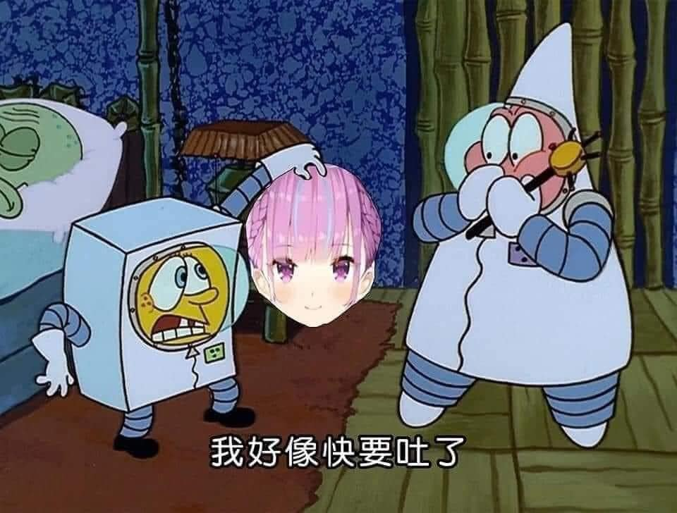

討厭阿夸的理由

- 臺灣與可可被設為禁字：待續補圖
- 在Ark大亂鬥炎上期間會長曾幫助過夸寶，特別開了一場直播開導夸寶，並在直播中與夸寶Anti說：「想攻擊就攻擊我吧」，然而龍心事件後夸寶卻不曾積極與會長互動，僅在MC上與會長打過一次招呼
- 未積極切割中國粉絲，對攻擊會長的中國粉絲採取消極態度，僅在直播上說出不要用自己的頭像做壞事，不然便是夸寶粉絲失格，然而在這次直播後，絆佬便在10/31萬聖節夸寶的畫中墓碑上偷藏私貨，寫著tskk nmsl(桐生可可 你媽死了）之後被網友發現，並在5ch炎上，然而在炎上當天晚上，夸寶卻繼續用著絆做的ED，直到後來日本網友看不下去詢問夸寶立場夸寶才撤下絆做的ED，然而即使絆做了這樣的事，夸寶的推特卻還是繼續追隨他：待續補圖順帶一提，曾有可悲夸寶仗著自己八個月會員，以為自己不會被夸寶Ban,於是就把自己名字改成「あくあ能不能跟會長聯動」結果被Ban掉，笑死，還敢皮阿4V
- 夸粉們在看到瑪莉歐賽車大賽時夸寶拿了第二名未能奪冠，於直播時痛哭，因此在星姐直播時用SC叫星姐叫星姐給夸寶冠軍，以及在夸寶和nene聯動，夸粉因為不喜歡nene的建築風格而在nene直播評論區和聊天室亂臺
- 1/27號的Apex直播中，某一次衝突時隊友衝在前面但湊あくあ打到一半不進攻反而後退，最後隊友獨自死在前面。同隊隊友於是以中文罵了夸寶，造成夸寶不滿，而大多數遊戲玩家則認為這是正常現象，雙方發生激烈筆戰，並蔓延到多個Vtuber和APEX社團，有夸粉甚至跑去肉搜那位路人隊友，夸寶在3/20號的Apex自己是真的天然的大師，不是人工的！完全沒跟人排所以是天然的大師！造成Apex民不滿
- 過激夸粉只要說到夸不好的地方就說他人通靈，玩到夸的Q走、優越組之類的梗就跳起來跟玩梗的人吵，造成他人不滿，而自己本身也很喜歡說出自己的推最努力，其他人都不夠努力之類的踩人捧夸的話來給夸寶招黑
- 由於夸粉太好釣，因此也出現不少釣魚仔樂子人以釣夸粉為樂
- 同伴出事不相挺，破壞箱推感
- 阿夸就是孤兒